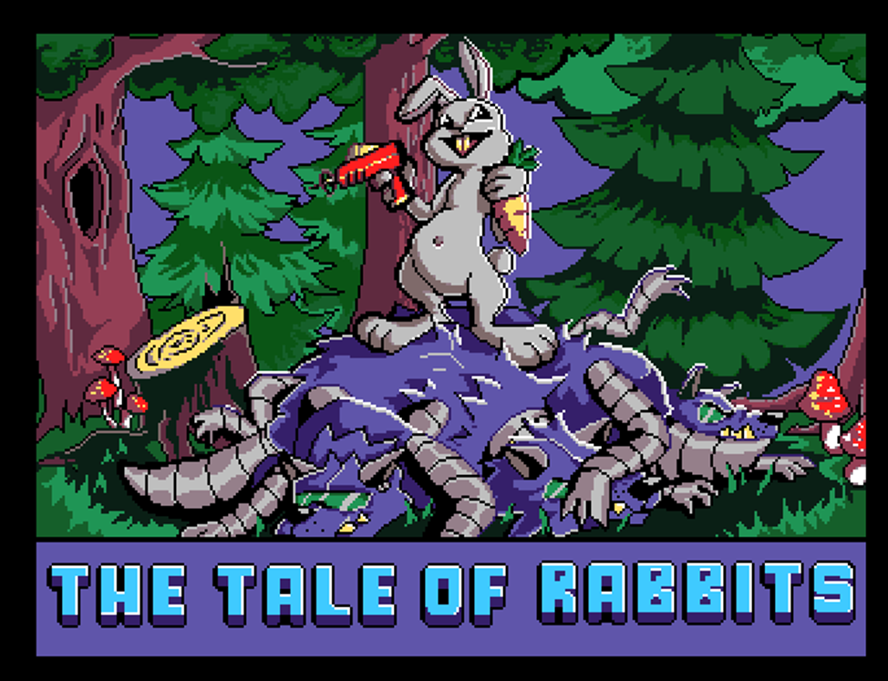
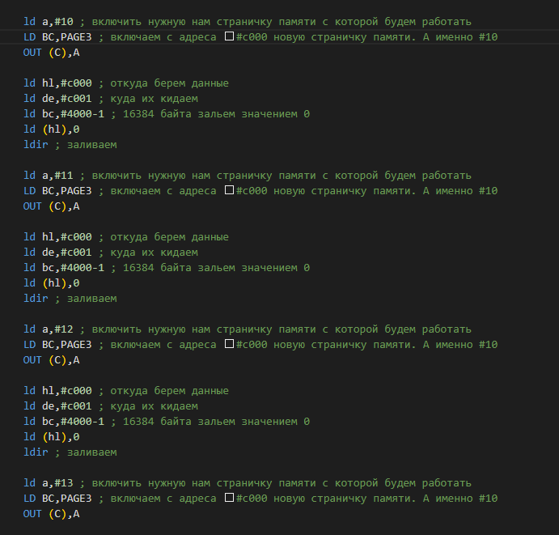
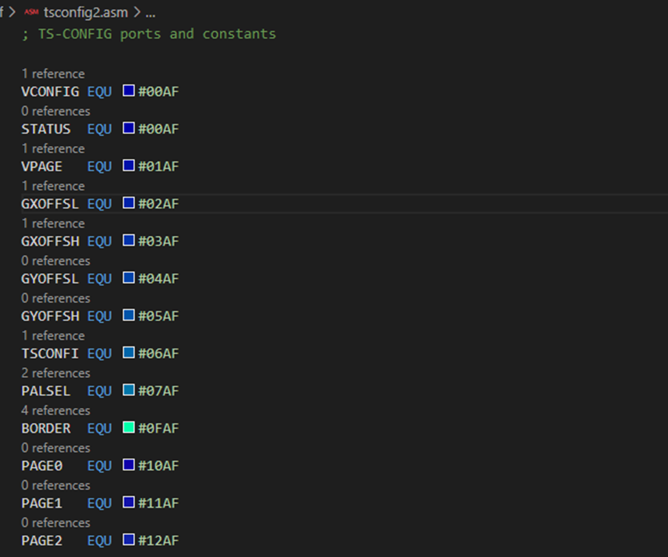
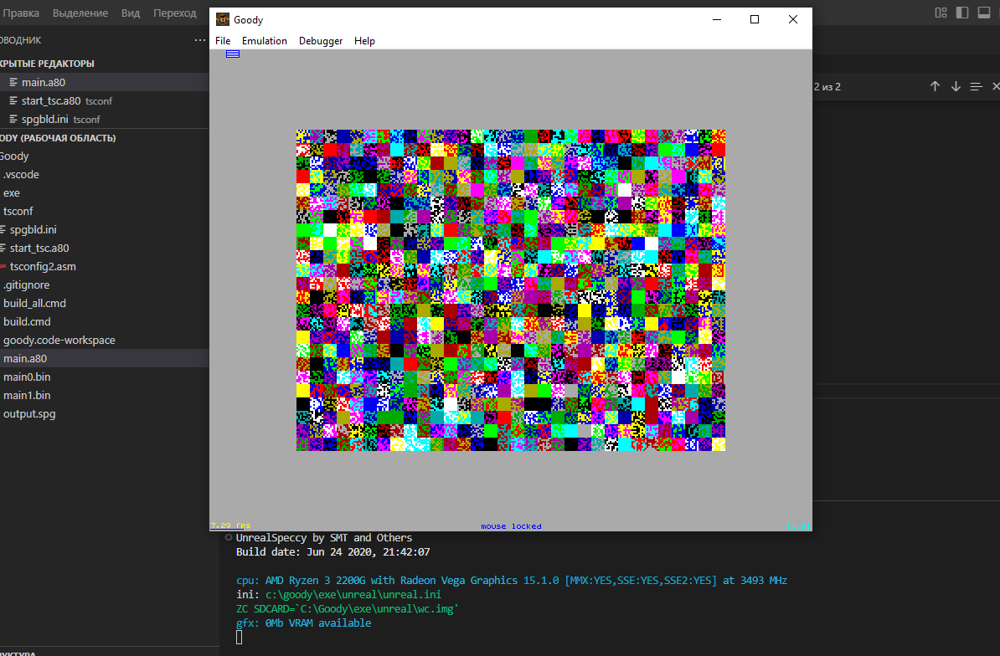
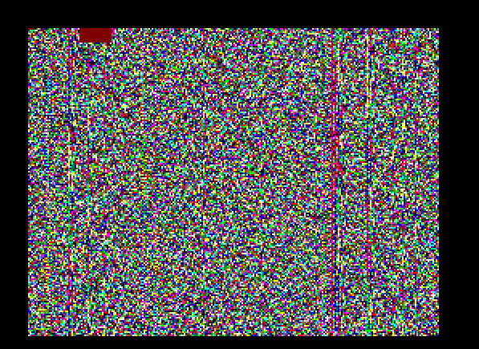
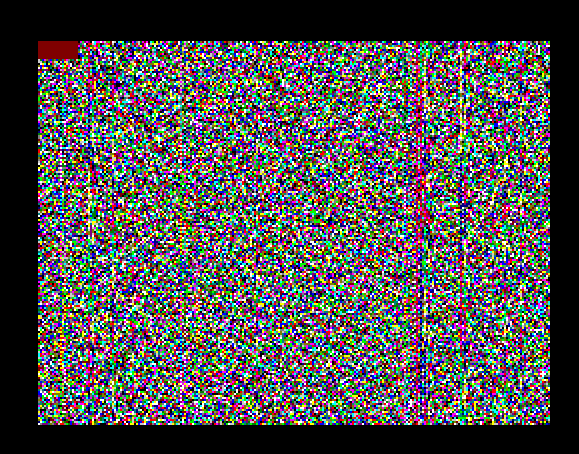
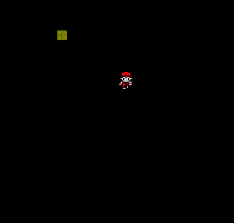
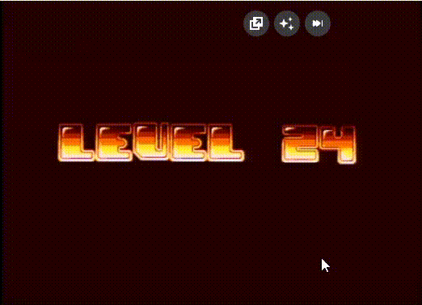

Программирование под TS-Config
Практический учебник с подробным разбором граблей, на которых вы наверняка наступите. Адресован тем, кто впервые открывает для себя ZX Evolution / TS-Config и хочет писать на Z80 не «учебные мигалки бордюром», а реальную игру — с аппаратными спрайтами, тайлами, мышью и DMA.
Этот учебник переработан из оригинального пособия С. С. Слободчикова. Сохранена структура и большинство примеров. Но добавлено главное, что отсутствовало в оригинале: точный разбор подводных камней, без которого первая же реальная игра упирается в дни отладки. Эти подводные камни — реальный опыт разработки Zuma Deluxe на TS-Config.
1. Что такое TS-Config
TS-Config (или TSConf) — расширенная конфигурация платформы ZX Evolution, развивающая идеи ZX Spectrum, но с радикально расширенными возможностями:
- 4 МБ оперативной памяти (вместо 48–128 КБ Spectrum), переключаемая страницами по 16 КБ.
- Тактовая частота до 14 МГц (вместо 3.5 МГц), с кэшем.
- Видеорежимы до 360×288 точек, до 256 цветов, 16-цветный режим с 4 палитрами.
- Аппаратный видеопроцессор TSU — выводит спрайты и тайлы поверх фона на 7 слоях.
- DMA-контроллер со скоростью копирования 7 МБ/с.
- Kempston Mouse — мышь.
Это не игрушка для ностальгии — это полноценная 8-битная игровая консоль с мощностью на уровне SNES.

2. Инструменты и проект
Минимальный набор:
- VS Code + расширения: ASM Code Lens, Z80 Instruction Set, Z80 Assembly meter.
- Ассемблер sjasmplus — командной строки, поддерживает синтаксис
--syntax=ab. - Эмулятор Unreal Speccy с поддержкой TS-Config — для запуска и отладки.
- Графический редактор Graphics Gale или любой, поддерживающий 4bpp PNG/TGA. Я использую Python с PIL.
- Готовый шаблонный проект Goody — git-репозиторий.

Структура проекта
main.a80 ; основной цикл
install_video.a80 ; настройка видеорежима
tsconf/
start_tsc.a80 ; начальный адрес и подгрузка файлов
tsconfig2.asm ; описание портов TS-Config
spgbld.ini ; сборщик SPG-файла
Gfx_Ready/ ; сконвертированная графика
3. Порты — основа всего
TS-Config полностью управляется через порты. Все настройки видео, страниц, DMA, спрайтов делаются записью в порты. Старшие 8 бит порта обычно #xxAF:
VCONFIG EQU #00AF ; видеорежим
VPAGE EQU #01AF ; страница видеопамяти
PAGE0 EQU #10AF ; страница в slot 0 (#0000-#3FFF)
PAGE3 EQU #13AF ; страница в slot 3 (#C000-#FFFF)
SYSCONFIG EQU #20AF ; тактовая частота, кэш
FMADDR EQU #15AF ; включение FMaps
SGPAGE EQU #19AF ; страница спрайтов TSU
Полный список — в приложении в конце.
Базовая запись в порт
LD BC, VCONFIG ; адрес порта в BC
LD A, %11100010 ; данные в A
OUT (C), A ; запись
4. Видеорежим
Видеорежим задаётся одним байтом в порту VCONFIG. Биты:
| Биты | Назначение | Значения |
|---|---|---|
| 1–0 | Цветовая глубина | 00 = ZX, 01 = 16c, 10 = 256c, 11 = текст |
| 5 | NOGFX | 1 = выключить canvas (битмап-слой) |
| 7–6 | Разрешение | 00 = 256×192, 01 = 320×200, 10 = 320×240, 11 = 360×288 |

Пример: 360×288, 256 цветов, без canvas
LD BC, VCONFIG
LD A, %11100010 ; 11 = 360x288, 1 = NOGFX, 0 = MOBs, 10 = 256c
OUT (C), A
Если canvas выключен (NOGFX=1), битмап-слой не рендерится — экран чёрный, на нём рисуются только TSU-слои (тайлы и спрайты). Это нужно для игр, где фон — тайлы, а не битмап.
5. Страничная память
4 МБ памяти TS-Config разделены на 256 страниц по 16 КБ. Z80 видит 64 КБ (4 слота по 16 КБ). В каждый слот можно подгрузить любую из 256 страниц через свой порт:
PAGE0 EQU #10AF ; slot 0: #0000..#3FFF
PAGE1 EQU #11AF ; slot 1: #4000..#7FFF
PAGE2 EQU #12AF ; slot 2: #8000..#BFFF
PAGE3 EQU #13AF ; slot 3: #C000..#FFFF
Например, чтобы получить доступ к графике в странице #07 через адреса #C000..#FFFF:
LD BC, PAGE3
LD A, #07
OUT (C), A
; теперь #C000 = первый байт страницы 7
Видеопамять (canvas-режим)
В canvas-режиме видеопамять занимает 3 страницы подряд, начиная с указанной в VPAGE. По умолчанию это страницы #10, #11, #12. Очистка экрана:
LD BC, PAGE3 : LD A, #10 : OUT (C), A ; включаем page 10
LD HL, #C000
LD DE, #C001
LD BC, #3FFF
LD (HL), 0
LDIR ; залили page 10 нулями
; повторить для #11, #12
6. Палитра и FMaps
FMaps — специальная область памяти TS-Config для работы с графикой. При записи #10 в порт FMADDR биты #0000..#03FF CPU-памяти переключаются на FMaps:
Включение FMaps
LD BC, FMADDR
LD A, %00010000 ; FM_EN бит 4
OUT (C), A
; теперь #0000-#01FF = CRAM, #0200-#03FD = SFILE
; ... писать в палитру / дескрипторы ...
LD BC, FMADDR : XOR A : OUT (C), A ; выключить
Read из
#0200..#03FF при FM_EN=ON отдаёт ROM Spectrum, не SFILE. Подробности и обходные пути — в разделе «Грабли».
При FM_EN=ON адрес
#0038 (target IM 1 interrupt) попадает внутрь SFILE. Если в этот момент сработает interrupt — CPU прыгает на байт descriptor'а и исполняет его как код. Память будет случайным образом перезаписана. Всегда отключайте interrupts при работе с FM_EN. Подробности — в разделе «Грабли».
Запись палитры в CRAM
Палитра — массив 256 16-битных цветов. Формат каждого цвета:
; 16 бит: x|R5|G5|B5|brightness
; byte 0: GGGB BBBB
; byte 1: 1 RRRRR GG (старший бит = яркость)
Палитра делится на блоки по 16 цветов = 32 байта. SPAL=0 — байты #0000..#001F, SPAL=1 — #0020..#003F, и т. д. до SPAL=15 (#01E0..#01FF).
LD BC, FMADDR : LD A, #10 : OUT (C), A
LD HL, MyPalette ; источник в RAM
LD DE, #0000 ; цель в CRAM (SPAL=0)
LD BC, 32 ; 16 цветов × 2 байта
LDIR
LD BC, FMADDR : XOR A : OUT (C), A
LDIR здесь работает потому, что source — в обычной RAM (а не в FMaps).
7. DMA
DMA-контроллер копирует 16-битными порциями со скоростью 7 МБ/с. Используется для:
- Очистки экрана (заливка значением).
- Копирования спрайтов в видеопамять (с blitting / прозрачностью).
- Копирования больших блоков данных между страницами.

Универсальная процедура DMA-копирования
dma_copy:
EX AF, AF'
LD A, 0
pagefr EQU $-1 ; патчится перед вызовом
LD BC, DMASADL : OUT (C), L
INC B : OUT (C), H ; DMASADH
INC B : OUT (C), A ; DMASADX (страница)
LD A, 0
pageto EQU $-1
INC B : OUT (C), E ; DMADADL
INC B : OUT (C), D ; DMADADH
INC B : OUT (C), A ; DMADADX
LD HL, 0
sizebc EQU $-2
LD B, high DMALEN : OUT (C), H
LD B, high DMANUM : OUT (C), L
EX AF, AF'
LD B, high DMACTR : OUT (C), A ; запуск
.wait:
IN A, (C)
RET P ; готово?
JR .wait
Режимы DMA
| A = | Режим |
|---|---|
%00000100 | Заливка (fill) — копирует 2 байта source во всю область dest |
%10110001 | Blitting — прозрачность по индексу 0 (важно для спрайтов) |
%00110100 | Копирование заданной области (X×Y) без blitting |
Важно про размеры
DMA копирует 2 байта за такт. В 16-цветном режиме (4bpp) это 4 пикселя. Поэтому если хотите залить квадрат 16×8 пикселей в 16c — указывайте B = 4 (вместо 16). А в 256-цветном — 8.
8. TSU — аппаратные спрайты
Видеопроцессор TSU умеет выводить до 85 спрайтов на экран одновременно, поверх битмап-слоя. Каждый спрайт — от 8×8 до 64×64, всегда 4bpp (16 цветов из выбранной палитры).

Дескриптор спрайта — 6 БАЙТ
В оригинальной документации фраза «85 cells × 48 bit» легко пропустить. 48 бит = 6 байт. Если по привычке использовать арифметику
index × 8, descriptors начнут перекрываться, и на экране появятся призрачные спрайты.
Запись descriptor 0 (первый спрайт)
LD BC, FMADDR : LD A, #10 : OUT (C), A ; FM_EN ON
LD HL, #0200 ; descriptor 0
LD (HL), 100 ; Y_L = 100
INC HL
LD (HL), SPACT+SPSIZ16 ; ACT=1, размер 16 по Y, YH=0
INC HL
LD (HL), 128 ; X_L = 128
INC HL
LD (HL), SPSIZ16 ; размер 16 по X, XH=0
INC HL
LD (HL), 0 ; TNUM_L = 0 (первый тайл)
INC HL
LD (HL), #10 ; SPAL=1, TNUM[11:8]=0
LD BC, FMADDR : XOR A : OUT (C), A ; FM_EN OFF
Адресация descriptor N
; descriptor N → #0200 + N×6
; Через регистры: 6×N = 2N×3 = (N+N+N)×2
LD L, N : LD H, 0
LD D, H : LD E, L ; DE = N
ADD HL, HL ; 2N
ADD HL, DE ; 3N
ADD HL, HL ; 6N
LD DE, #0200
ADD HL, DE ; HL = #0200 + 6×N
SGPAGE — где взять графику спрайтов
Регистр SGPAGE задаёт стартовую страницу графики спрайтов. TNUM — это 12-битный индекс «тайла» 8×8 в воображаемом «ковре» 4 страниц подряд:
SGPAGE = N → TNUM 0..511 = page N
TNUM 512..1023 = page N+1
TNUM 1024..1535 = page N+2
TNUM 1536..2047 = page N+3
То есть одна SGPAGE даёт доступ к 64 КБ графики, без переключений на лету.
Включение TSU
LD BC, TSCONFIG
LD A, %10100000 ; bit 7 = TSU спрайты, bit 5 = тайл-слой 0
OUT (C), A
Бит 7 — все спрайтовые слои; бит 5 — тайл-слой 0; бит 6 — тайл-слой 1.
9. TSU — тайлы и фон
Тайлы 8×8 пикселей рисуются в двух слоях. Каждый тайл — 2 байта в карте:
| Биты | Назначение |
|---|---|
| 11–0 | TNUM (номер тайла в графике) |
| 13–12 | SPAL (0..3 — выбор палитры) |
| 14 | Зеркало по X |
| 15 | Зеркало по Y |

Настройка
LD BC, T0GPAGE : LD A, #C0 : OUT (C), A ; графика тайл-слоя 0
LD BC, TMPAGE : LD A, #08 : OUT (C), A ; карта тайлов
В странице карты данные слоя T0 размещаются с #C000, слоя T1 — с #C080. Шаг между строками карты — 256 байт.
10. Скроллинг
Тайл-слои можно сдвигать на пиксельном уровне (диапазон 0..511 по X и Y). Порты:
T0XOFSL/T0XOFSH ; offset слоя T0 по X (младший/старший байт)
T0YOFSL/T0YOFSH ; offset слоя T0 по Y
T1XOFSL/T1XOFSH ; для слоя T1
T1YOFSL/T1YOFSH
Спрайты не имеют отдельного скроллинга — для движения просто меняйте координаты в descriptor.
11. Клавиатура и мышь
Клавиатура
Стандартное чтение портов #xxFE. Бит = 0 при нажатии:
LD BC, #7FFE ; ряд "B..SPACE"
IN A, (C)
BIT 0, A ; SPACE
JR Z, space_pressed
Kempston Mouse
MOUSE_X EQU #FBDF ; X-счётчик (8 бит, относительный)
MOUSE_Y EQU #FFDF ; Y-счётчик
MOUSE_BTN EQU #FADF ; кнопки
Координаты — счётчики 8-bit, накапливаются в железе. Нужно считать дельту между кадрами:
LD BC, MOUSE_X
IN A, (C)
LD HL, MouseXPrev
LD B, (HL)
LD (HL), A ; сохранили новое
SUB B ; A = signed delta
Стандарт Kempston: бит 0 = правая, бит 1 = левая. Unreal Speccy: бит 0 = ЛКМ, бит 1 = ПКМ. Polarity нормальная (1 = нажата). Проверяйте на своём железе/эмуляторе!
Edge detection (1 нажатие = 1 действие)
IN A, (C)
AND %00000001 ; ЛКМ
LD HL, MouseBtnPrev
LD B, (HL)
LD (HL), A
OR A
JR Z, .no_shot ; не нажата сейчас
LD A, B
OR A
JR NZ, .no_shot ; была нажата в прошлом кадре
CALL ShootBall ; чистый фронт 0→1
.no_shot:
12. Грабли — обязательно прочитать!
Этот раздел — концентрат опыта боевой разработки. Каждый пункт — день отладки в среднем.
12.1. FM_EN — write-only через CPU
Причина: при FM_EN=ON чтение из
#0000..#03FF отдаёт ROM Spectrum, не FMaps. Запись работает.
Опаснейшее следствие: LDIR с source в SFILE копирует ROM-байты в SFILE:
; ❌ НЕ РАБОТАЕТ — копирует ROM в SFILE!
LD HL, #0200
LD (HL), 0
LD DE, #0201
LD BC, 509
LDIR
На каждой итерации LDIR делает read (HL) — а это чтение из ROM-таблицы ключевых слов BASIC ('COPY' = 43 4F 50 D9, 'POINTS', 'SCREEN', ...). Многие байты этих строк имеют bit 5 = 1, что в SFILE интерпретируется как ACT=1. Десятки descriptors получают мусорные координаты и графику. Призраки на экране.
Правильно: immediate writes через DJNZ:
LD BC, FMADDR : LD A, #10 : OUT (C), A
LD HL, #0200
LD B, 255
.l1: LD (HL), 0 : INC HL : DJNZ .l1
LD B, 255
.l2: LD (HL), 0 : INC HL : DJNZ .l2 ; всего 510 байт
LD BC, FMADDR : XOR A : OUT (C), A
12.2. IRQ во время FM_EN рушит память
#C001) или код (KeySpacePrev = #AF). Программа работает «через раз».Причина: при FM_EN=ON
#0038 — это байт ВНУТРИ SFILE. Если в этот момент сработает interrupt в IM 1, CPU прыгает на этот байт и исполняет его как код.
Простейшее лечение — обернуть весь main loop в DI, EI ставить только перед HALT:
MainLoop:
EI ; разрешить IRQ только для HALT
HALT ; ждём vsync
DI ; на весь кадр interrupts off
CALL ...логика...
JP MainLoop
Альтернатива — DI/EI прямо перед каждым OUT FMADDR, #10.
12.3. Stride descriptor = 6 байт
Причина: вы используете
index × 8 для адресации descriptor. Каждый «слот шара» гадит в два настоящих descriptors.
Правильный stride — 6 байт, 85 descriptors суммарно. Проверка адресной арифметики на бумаге обязательна.
12.4. TSU и ACT=0 в начале списка
Лечение: размещайте активные descriptors подряд без пропусков. В Zuma я расположил так: жаба #0200, курсор #0206 (сразу после жабы), шары #020C..#02CB.
12.5. Размер descriptor != размер data structure
В моей структуре BallTable каждая запись — 8 байт (X 2, Y 2, ang 1, spd 1, act 1, color 1). Это удобно для индексации через IX. Но в SFILE descriptor — 6 байт. Не путайте: stride struct ≠ stride descriptor.
12.6. Полная чистка SFILE — обязательна на старте
После reset RAM содержит мусор. Если не очистить SFILE — будете долго удивляться странным descriptors с ACT=1, рендерящимся неизвестно где. Чистите 510 байт #0200..#03FD в InitGame.
12.7. Не писать за #03FD
SFILE = 510 байт = #0200..#03FD. Дальше идут port-mapped регистры TS-Config (адресуемые через #nnAF). Запись туда вызывает «Illegal port OUT» в эмуляторе и непредсказуемое поведение на железе.
12.8. UpdateBallSprites — обновлять ВСЕ слоты
Соблазн: пропустить неактивные шары для скорости. Опасность: descriptor неактивного шара остаётся со старыми данными (если не очищен в момент удаления). Лучше: писать descriptor для каждого слота каждый кадр (активный → данные шара, неактивный → 6 нулей). Это гарантия от stale-state и стоит совсем недорого.
12.9. Биты Kempston Mouse в Unreal Speccy
В Unreal Speccy: бит 0 = ЛКМ, бит 1 = ПКМ. На реальном железе и в стандарте Kempston — наоборот. Если стрельба «не работает с мыши» — попробуйте поменять бит.
13. Раскладка SFILE на практике
Из опыта Zuma — рабочая раскладка:
Ключевое — курсор сразу за жабой, перед шарами. TSU перестаёт рендерить на первом ACT=0 — поэтому если курсор отнести в descriptor 44 (как сделал я в первой версии), он не виден за «дырой» неактивных шаров.
14. Конвертация графики 4bpp
Для 4bpp (16 цветов) в page TS-Config используется такая раскладка:
addr_in_page = tnum_y × 2048 + ycnt × 256 + tnum_x × 4 + bsel
где:
tnum_y= 0..7 (8 строк tile-rows, каждая высотой 8 пикселей)ycnt= 0..7 (строка пикселя внутри tile)tnum_x= 0..63 (64 тайла в ширину = 512 пикселей)bsel= 0..3 (по 2 пикселя на байт, всего 4 байта на 8-пиксельный тайл по X)- Старшая четвёрка байта = чётный пиксель, младшая = нечётный
Минимальный Python-конвертер для 16×16 спрайта:
from PIL import Image
img = Image.open("sprite.png").convert("P", palette=Image.ADAPTIVE, colors=16)
gfx = bytearray(4096)
for py in range(16):
tnum_y, ycnt = py // 8, py % 8
for px in range(16):
tnum_x = px // 8
bsel = (px % 8) // 2
nibble = px % 2
idx = img.getpixel((px, py))
addr = tnum_y * 2048 + ycnt * 256 + tnum_x * 4 + bsel
if nibble == 0:
gfx[addr] = (gfx[addr] & 0x0F) | ((idx & 0xF) << 4)
else:
gfx[addr] = (gfx[addr] & 0xF0) | (idx & 0xF)
15. Zuma как пример
Ниже — критичные фрагменты из реальной игры (~1200 строк Z80), собранные по темам этого учебника. Они иллюстрируют то, что обсуждалось выше, и сами по себе работоспособны — копируйте, адаптируйте.

15.1. Анимированный спрайт 32×32 (жаба, 32 кадра)
Атлас разложен в две горизонтальные полосы по 16 кадров (каждый кадр — 32×32 пикселя, занимает блок 4×4 тайла), SGPAGE=6, SPAL=0. Кадр выбирается по углу:
UpdateFrogSprite:
LD BC, FMADDR : LD A, FM_EN : OUT (C), A
LD HL, #0200 ; descriptor 0 — жаба
LD DE, (FrogY)
LD (HL), E : INC HL ; Y_L
LD (HL), %00100110 : INC HL ; Y flags: ACT + SIZE32 (Y_H бит =0)
LD DE, (FrogX)
LD (HL), E : INC HL ; X_L
LD A, D : AND 1 : OR %00000110
LD (HL), A : INC HL ; X flags + SIZE32
; Кадр анимации: N = ((FrogAngle - 64) & 0xFF) >> 3 ; 0..31
; TNUM = (N>>4)*256 + (N&15)*4 ; 16 кадров на полосу, 4 тайла на кадр
LD A, (FrogAngle)
SUB 64 ; кадр 0 — юг (FrogAngle=64)
SRL A : SRL A : SRL A ; A = N (0..31)
LD D, A
SRL A : SRL A : SRL A : SRL A ; A = N>>4 (TNUM_H, 0 или 1)
LD E, A
LD A, D : AND #0F ; A = N&15
ADD A, A : ADD A, A ; A = (N&15)*4 = TNUM_L
LD (HL), A : INC HL
LD A, E : LD (HL), A ; SPAL=0 (старшая тетрада) + TNUM_H
LD BC, FMADDR : XOR A : OUT (C), A
RET
15.2. Kempston Mouse + edge detection ЛКМ
Kempston-счётчики X/Y — 8-bit относительные. Дельту берём через SUB prev, накапливаем в 16-bit абсолют, кламп по краям экрана. Y инвертируем (Kempston: вверх = +). Для выстрела — нарастающий фронт через MouseBtnPrev:
; --- ЛКМ: edge detection (нажата сейчас, не была в прошлом кадре) ---
; В Unreal Speccy ЛКМ сидит в БИТЕ 0 порта #FADF (а не в бите 1 как стандарт!),
; polarity нормальная (1 = нажата).
LD BC, MOUSE_BTN
IN A, (C)
AND %00000001
LD HL, MouseBtnPrev
LD B, (HL)
LD (HL), A
OR A
JR Z, .no_shot ; ЛКМ не нажата
LD A, B
OR A
JR NZ, .no_shot ; уже была нажата → не первый кадр
CALL ShootBall ; ровно один выстрел на нажатие
.no_shot:
15.3. Угол с гистерезисом (плавное следование)
Перевод (dx,dy) → угол через октанты + AtanTable описан в книжках по векторной математике; ниже — только финальный гибридный апдейт FrogAngle: большой скачок применяется как есть, маленький (1..3 unit) сглаживается шагом ±1. Это убивает дёрганье на дискретных пикселях курсора.
.store: ; A = новый угол; C = max(|dx|,|dy|)
LD B, A ; B = new
LD A, C
CP 5
JR C, .done ; deadzone: курсор слишком близко
LD A, B
LD HL, FrogAngle
SUB (HL) ; A = signed (new - old) (8-bit wrap)
JR Z, .done
LD D, A ; запомним знак
BIT 7, A
JR Z, .pos
NEG ; A = |diff|
.pos:
CP 4
JR NC, .full ; крупный сдвиг → присваиваем new
LD A, (HL)
BIT 7, D
JR NZ, .dec
INC A : JR .save ; шаг +1
.dec:
DEC A
.save:
LD (HL), A
RET
.full:
LD (HL), B
.done:
RET
15.4. 32 шара через одну descriptor-таблицу
Структура шара (8 байт: X16, Y16, angle, speed, active, color) живёт в RAM, а descriptor TSU собирается каждый кадр. Адресная арифметика — stride 6 байт:
UpdateBallSprite: ; C = 1..32 (номер шара), IX = ptr на BallTable[C-1]
; HL = #020C + 6*(C-1) ; #020C — descriptor 2, шары начинаются здесь
LD A, C : DEC A
LD L, A : LD H, 0
LD D, H : LD E, L
ADD HL, HL ; *2
ADD HL, DE ; *3
ADD HL, HL ; *6
LD DE, #020C
ADD HL, DE ; HL = адрес descriptor для этого шара
LD BC, FMADDR : LD A, FM_EN : OUT (C), A
LD A, (IX+BALL_ACTIVE)
OR A
JR Z, .clear ; неактивен → 6 нулей (ACT=0)
; ... обычная запись descriptor (Y, Yflags+ACT+SIZE16, X, Xflags+SIZE16, TNUM_L, TNUM_H+SPAL) ...
JR .done
.clear:
XOR A
LD (HL), A : INC HL
LD (HL), A : INC HL
LD (HL), A : INC HL
LD (HL), A : INC HL
LD (HL), A : INC HL
LD (HL), A
.done:
LD BC, FMADDR : XOR A : OUT (C), A
RET
Ключевая идея — пишем descriptor для всех 32 слотов каждый кадр (см. 12.8), активные → данные шара, неактивные → 6 нулей. Никакого stale-state.
Что в этом примере собрано вместе:
- Загрузка спрайта 32×32 в 32 кадрах анимации (15.1).
- Чтение Kempston Mouse + edge detection ЛКМ (15.2).
- Управление по углу с гистерезисом — плавный поворот (15.3).
- 32 динамических шара через одну descriptor-таблицу (15.4).
- Спавн/удаление спрайтов с очисткой descriptors (см.
.clearв 15.4). - Все грабли из раздела 12 — обойдены.
16. Продвинутые техники (на примере Zuma)
Эти приёмы выкристаллизовались по ходу разработки и решают конкретные проблемы которые встречаются при реальном программировании.
16.1. IM 2 + Fixed Timestep — стабильная физика при тяжёлом рендере
Если main loop делает большие DMA-blit'ы (десятки шаров — 60+ DMA-операций за кадр), один кадр может выйти за 20мс. Тогда game speed падает: летящие шары "тормозят", цепочка двигается рывками.
Решение из геймдева — Fixed Timestep. Прерывание (vsync IRQ) только инкрементирует тик-счётчик, а MainLoop "догоняет" логику отдельно от рендера.
Setup IM 2 на TS-Conf: Frame IRQ peripheral возвращает data byte #FF. Vector_address = (I<<8) | data. Кладём 2 байта (адрес ISR'а) в произвольное место RAM (например, пустой кусок page 5):
; Init: записать ISR-адрес в #5EFF/#5F00 (= в нашей же page 5)
LD A, LOW(IRQHandler)
LD (#5EFF), A
LD A, HIGH(IRQHandler)
LD (#5F00), A
LD A, #5E
LD I, A ; I*256+#FF = #5EFF
IM 2
LD BC, INTMASK : LD A, #01 : OUT (C), A ; INTMSKF — только frame IRQ
EI
IRQHandler:
PUSH AF
LD A, (TickCount)
INC A
LD (TickCount), A
POP AF
EI
RETI
MainLoop:
MainLoop:
DI
LD A, (TickCount)
LD B, A
LD A, (ProcessedTicks)
EI
CP B
JR Z, .render ; догнали — рисуем
CALL UpdateGame ; шаг логики (= 20мс игрового времени)
LD HL, ProcessedTicks
INC (HL)
JR MainLoop
.render:
CALL RenderFrame ; swap + sprites + DMA blit
HALT ; сон до следующего IRQ
JR MainLoop
Если рендер занял больше 20мс (= один или несколько IRQ срабатывало во время него), MainLoop увидит TickCount > ProcessedTicks и выполнит UpdateGame несколько раз подряд, наверстав игровое время. Визуально игра будет рендерить с просадкой fps, но скорость физики останется константной (50 Hz).
Атомарность. Логика и рендер целиком в MainLoop, ISR трогает только TickCount → нет race conditions, не нужны DI/EI вокруг чтения координат. Это ключевое отличие от наивного "переноса логики в IRQ".
16.2. DMA X×2 / Y×1 granularity — двойной спрайт
TS-Conf DMA blit имеет 2-pixel granularity по X и 1-pixel по Y. Шар, нарисованный на нечётной X-координате, "снапается" к чётной — при движении по кривой это выглядит как шатание на 1px поперёк траектории.
Workaround Сергея Слободчикова — два варианта спрайта на каждый цвет:
- even: ball на col 0..(BALL_PIX-1), col BALL_PIX..(BALL_PIX+1) = pad нулями (transparent под BLT1).
- odd: col 0 = transparent (1px пэд), ball сдвинут на +1 px вправо (col 1..BALL_PIX), col BALL_PIX+1 = pad.
Спрайты хранятся в отдельных страницах: BALLS_DMA_EVEN_PAGE, BALLS_DMA_ODD_PAGE.
В коде blit:
; X & #FE → dst_X (всегда чётный, безболезненный для DMA snap),
; bit 0 X → выбор even/odd-страницы спрайта.
LD A, (TmpChainX)
LD B, A
AND 1
LD (BcsXOdd), A
LD A, B
AND #FE
LD (BcsDstLow), A ; чётный X
; ... затем выбор страницы:
LD A, (BcsXOdd)
OR A
JR Z, .even
LD A, BALLS_DMA_ODD_PAGE
JR .have
.even:
LD A, BALLS_DMA_EVEN_PAGE
.have:
ADD A, B ; + color (где B = индекс цвета)
LD BC, DMASADX : OUT (C), A
DMA копирует BALL_PIX/2 word'ов (не (BALL_PIX+2)/2) — последний пиксель odd-варианта обрезается, но он на edge'е circular-mask и обычно прозрачный. Цена: ×2 памяти на спрайты, +0% DMA-нагрузки.
16.3. VDC модель цепочки — дискретные slots с виртуальным движением
Прямая физика "шарики толкают друг друга" на Z80 слишком тяжёлая (тысячи операций × 60 шаров × 50 Hz). Альтернатива — VDC (Virtual Discrete Chain): цепочка хранится как массив Slots[] цветов, позиция шара i вычисляется по треку:
t_i = (HSA - i) * CELL_SIZE + HSub + SlotOffsets[i]
TrackData[t_i] → (X, Y) для blit'а
где HSA — head slot abs (= позиция головного шара по дискретному треку, шаг 32px), HSub — sub-cell offset 0..31 (плавное движение), SlotOffsets[i] — signed дельта для smooth match-3 анимации.
Преимущества: O(1) для движения цепочки (просто HSub++), O(1) для insert (shift_right), O(N) для match-3 detection (window-3 scan).
Match-3 без выстрела — anti-3-in-row spawn-guard
Если spawn ставит шар в tail и случайно делает 3-в-ряд того же цвета, match-3 сработает "без выстрела". Игроку выглядит как баг.
Решение: при spawn'е проверять последние два слота, если совпадают с кандидатом — bumpнуть цвет:
; A = candidate color (= NextChainColor от LFSR)
LD B, A
LD A, (Chain0_SlotsLen)
CP 2
JR C, .no_avoid
; Slots[len-1] == Slots[len-2]?
PUSH HL
DEC HL : LD A, (HL)
DEC HL : CP (HL)
JR NZ, .done ; разные → safe
CP B
JR NZ, .done ; candidate уже отличается
; bump: candidate = (candidate+1) mod NUM_BALL_COLORS
LD A, B : INC A
CP NUM_BALL_COLORS
JR C, .store
XOR A
.store:
LD B, A
.done:
POP HL
.no_avoid:
LD A, B
LD (HL), A ; Slots[len] = guarded color
При NUM_BALL_COLORS=1 guard no-op (match неизбежен — это level-loss). На последних уровнях Zuma HD остаётся 2 цвета — guard критичен для 0% spawn-match'ей.
Cascade combo — Shot2 markers и hybrid scan
После match-3 (от выстрела) на месте сматченных шаров появляются GAP-markers (виртуальные cells), которые потом плавно "схлопываются": GAP_STOP двигается к tail, GAP_CASCADE — к head. После закрытия GAP'а оставшиеся шары сдвигаются и могут сложить новый 3-в-ряд → cascade combo.
Чтобы триггерить combo детерминированно, при apply match-3 ставим Shot2-маркеры на двух соседях GAP-блока:
; В CheckMatch3 после установки Slots[lb..rb] = GAP-marker:
LD A, (TmpMatchLeft)
OR A : JR Z, .no_left ; lb=0 → нет соседа слева
DEC A
LD H, 0 : LD L, A : LD DE, Chain0_Shot2 : ADD HL, DE
LD (HL), 1 ; Shot2[lb-1] = 1
.no_left:
; аналогично для Shot2[rb+1]
В DoGapStep (где shift_left для GAP closure) Shot2-массив шифтится параллельно со Slots/Offsets — маркеры "следуют" за своими шарами.
После каждого close'а триггерим ScanForNewMatch только по Shot2-маркерам (Phase 1). Каждый маркер — это CheckMatch3(k). Если 3-в-ряд → match. Если нет — маркер не очищается, пока offsets возле k не settled (=0): match может ждать пока шары визуально съедутся (см. DM3_OFFSET_GAP_MAX).
Раннее у нас был fallback Phase 2 (full-chain window-3 scan). От него отказались — он давал «ложные» match'и без выстрела. Cascade combos сохраняются через Phase 1: DoGapStep при shift_left ставит Shot2[K-1]=1 и Shot2[K]=1 на compaction-site, и следующий scan их подхватывает.
16.4. Python visual emulator — Х30 ускорение отладки
Главный урок Zuma: для отладки физики цепочки пишем Python-эмулятор первым, а не последним. Цикл sjasmplus → spgbld → Unreal → screenshot/dump занимает ~5 минут на итерацию. Tkinter-эмулятор: правка кода → Alt-Tab → видно. ~10 секунд. Х30 ускорение.
Эмулятор повторяет VDC-логику 1-в-1: класс VDCEngine с теми же Slots[], SlotOffsets[], HSA, Sub, Shot2[], DoGapStep, ScanForNewMatch, CheckMatch3. Управление мышью (motion=прицел, click=выстрел). Каждый кадр пишется в текстовый лог:
frame slotsLen hsa hsub stalled scanIdx [slots] [offsets] [shot2] [rollback]По логу видно ровно те эпизоды, которые в asm ловятся только глазами. Например, для бага «не отрисованный хвост»: grep по логу показал группы кадров где t = (HSA-i)*32 + Sub + offset < 0 — = шар «за стартом» во время cascade rollback. Решение: при t<0 ball не рисуется (= pre-spawn зона, как в оригинальной Zuma). В asm эквивалент — флаг PRESERVE в BcsPreClassify: если HSA-i<0, slot не render'ится в PASS2.
Когда Python-эмулятор НЕ помогает — TS-Conf hardware (DMA granularity, FM_EN/CRAM, IRQ-таймиги, кэш). Их моделировать на Python нерентабельно, остаёмся в Unreal/ZEsarUX.
16.5. VDC physics fix-pack 2026-05-08 — итерация Python → asm
За одну сессию итеративной отладки в Python-эмуляторе нашли и устранили 13 связанных багов VDC-модели. Все исправления потом портированы в asm одним блоком. Описание ключевых.
Gap-check ассимметричный — overlap при insert ≠ cascade-gap
Старая формула |offsets[i] - offsets[i-1]| < 8 симметрична. Проблема: при insert новый шар получает offset = -CELL_SIZE/2 + (head_off + tail_off)/2, а соседний bumped имеет offset = 0. Diff = -16, |diff| = 16 ≥ 8 → match-3 НЕ срабатывает, хотя шары физически касаются.
Решение — diff трактовать как signed pixel-distance correction (pixel_dist = CELL_SIZE + diff): диапазон -CELL_SIZE ≤ diff < GAP_MAX. Левая граница допускает overlap (diff = -CS = pixel_dist 0), правая блокирует cascade-gap (diff = +CS = pixel_dist 64).
; ASM: было |offset[i] - offset[i-1]| < 8
; Стало:
SUB C ; A = offset[B] - offset[B-1]
NEG ; A = offset[B-1] - offset[B] = d (Python direction)
ADD A, CELL_SIZE ; A = d + CELL_SIZE (= pixel_dist)
CP CELL_SIZE + DM3_OFFSET_GAP_MAX ; unsigned compare
JR NC, .done ; out of [-CS..GAP_MAX-1] → exitCASCADE marker — is_gap exclusion для соседей
Маркер GAP_CASCADE ставится когда slots[lb-1] == slots[rb+1]. Если оба соседа — gap-маркеры (например, два STOP'а слева и справа), они равны (оба #FE) → ложный CASCADE с HSA-=1 и rollback'ом без причины. Фикс — добавить проверки is_gap.
STOP gap_step — переделан на cascade-like
Раньше STOP-семантика: только tail-снап вперёд (offsets[k..end] -= CELL_SIZE). Голова не двигается, HSA не меняется → расхождение HSA от SlotsLen накапливается, spawn не попадает в track[0].
Стало: симметрично с CASCADE — HSA-=1 + offsets[0..k-1] += CELL_SIZE с cap'ом max +CELL_SIZE. Tail НЕ компенсируем (shift idx-=1 + HSA-=1 автоматически сохраняет позицию).
Cap +CELL_SIZE для head компенсации
Без cap'а несколько cascade'ов подряд накапливают offset до 70+ → head визуально «зависает» на десятки кадров пока offset не decay'ится до 0. Решение: offsets[j] = min(offsets[j] + CELL_SIZE, CELL_SIZE).
DoGapStep — RET после STOP вместо fall-through в CASCADE
Если STOP+CASCADE срабатывают в одном вызове DoGapStep, HSA уменьшается на 2 за тик, но head компенсация cap'нута на +CELL_SIZE → head съезжает -32 px в одном кадре = видимый рывок назад. Фикс: обрабатывать ОДИН маркер за вызов.
InsertChainBall — head-forward модель
Старая модель: shift_right + offset=0 для нового шара + tail snap-back. Новая (Python-эквивалент):
- Считаем
new_offset = -CELL_SIZE/2 + (head_off + tail_off) / 2— midpoint между соседями. - Shift Slots/Offsets/Shot2 [idx..end] вправо на 1 (раньше Shot2 не сдвигался — был баг).
- Slots[idx]=color, Offsets[idx]=new_offset, Shot2[idx]=1.
- SlotsLen+=1.
- HSA+=1 с cap по track-end.
- Offsets[0..idx-1] = max(off - CELL_SIZE, -CELL_SIZE) — head компенсация с cap'ом.
- ChainFreezeCounter = CELL_SIZE.
Эффект: chain продвигается на 1 cell к killzone, head плавно слайдится 32 px вперёд за 32 кадра, новый шар появляется ровно посередине между head'ом и bumped'ом без overlap'а.
ChainFreezeCounter — пауза hsub-инкремента после insert/cascade-close
Без freeze: при insert head компенсация (offset -=CELL_SIZE) decay'ится за 32 кадра, ОДНОВРЕМЕННО chain движется (hsub++ каждый кадр). Net advance = 2*CELL_SIZE вместо 1. Через несколько выстрелов накапливается 18+ cell расхождения с slots_len.
Решение: новое поле ChainFreezeCounter, ставится в CELL_SIZE (= 32 кадра) после insert и после CASCADE close. MoveChain при freeze > 0 декрементит counter и возвращается, не инкрементируя hsub. Spawn НЕ блокируется — он использует свой gate по hsub=0.
SpawnChainBall — offset = SlotOffsets[SlotsLen-1]
Раньше новый шар получал offset=0. Если хвост был в decay'е (ненулевой offset), новый шар оказывался не на 32 px позади хвоста, а на 32+|offset| px → визуальная «дырка». Теперь offset нового = offset предыдущего хвоста → синхронный decay phase, ровный 32 px spacing.
AnimateChain gap_step align по hsub=0
Раньше gap_step срабатывал ровно на каждом 32-м кадре независимо от hsub. После do_gap_step chain мог быть в произвольной фазе (hsub=15, например), и следующий spawn попадал на track[15] вместо track[0].
Фикс: counter дошёл до threshold → проверяем hsub. Если != 0 — держим counter на threshold, ждём. На ближайшем hsub=0 wrap'е fire'им. Следующий tick = hsub=0 → spawn спавнит ровно на track[0].
RandomBallColor — фильтр по цветам chain'а
Лягушке не должен выпадать цвет, которого больше нет в цепочке (= бесполезный выстрел). Фильтр через BuildColorMask: сканируем Slots[0..len-1], собираем 6-битную маску, в random'е циклически пробуем mod NUM_BALL_COLORS до попадания в маску.
Урок: Python-эмулятор первым
Все 13 фиксов нашли в Python за один день. Каждая итерация: правка в Tkinter → Alt-Tab → виден результат в течение секунд. После того как все фиксы заработали — портирование в asm заняло меньше часа последовательной работы по списку (без новых багов в логике, только адаптация Z80-семантики). Это иллюстрирует основной тезис: сложную физику отлаживайте на высокоуровневой модели, а потом транскрибируйте в asm. Прямая отладка в asm обходится в 30× времени и не находит большинства багов.
17. Уроки сессии 2026-05-08 — explosion-анимация и refresh-race
Это самый «плотный» день: за один сеанс реализовали match-3 destroy-анимацию через TSU и поймали несколько архитектурных граблей, которые стоит знать заранее.
17.1 BALL_PIX ≤ 2 × min(TrackX): «gap» в начале трека
Подняли BALL_PIX с 18 до 22 (HD-look — шары стали почти соприкасаться). Сразу появился странный «gap» в самом начале спирали — один-два шара невидимы.
Корень: рендер вычисляет top-left спрайта X_top = trackX - DMA_SPRITE_HALF (где DMA_SPRITE_HALF = BALL_PIX/2). У нас минимум trackX = 10, при BALL_PIX=22 получалось 10-11 = -1 → BIT 7,H срабатывал → BcsPreClassify ставил слот в PRESERVE → DMA не рисовал шар. Логика VDC при этом считала шар существующим — отсюда «дырка».
Правило: BALL_PIX ≤ 2 × min(TrackX). Перед поднятием размера шара пройти по TrackData, найти minX/minY, посчитать лимит. Уровень с минимумом X=10 → BALL_PIX ≤ 20. Если очень хочется больший шар — сдвинуть трек или добавить partial horizontal-clip в BcsPreClassify (как уже есть vertical ClipTop/ClipBot).
17.2 Hemisphere insert: target_idx = i или i+1
До фикса при попадании летящего шара в шар цепочки target_idx = i всегда (head-side). Эффект: шар «прыгал на шар вперёд» от точки попадания, если визуально был ближе к правому соседу.
Hemisphere check (имеется в Python-эмуляторе): scan назад/вперёд от i до первого non-GAP соседа, посчитать Manhattan-дистанцию летящего шара до prev и next, выбрать меньший. Если ближе к next → target_idx = i+1.
; ComputeSlotXY(A=idx) → TmpHemX/Y (центр шара по TrackData)
; ManhattanDistToBall: |TmpHemX-TmpBallCX| + |TmpHemY-TmpBallCY|
; После collision detect:
LD A, (TmpChainIdx)
LD (TmpTargetIdx), A ; default = i
; ... scan prev / next non-GAP, считаем Manhattan, ...
LD HL, (TmpDistNext)
LD DE, (TmpDistPrev)
AND A
SBC HL, DE
JR NC, .keep ; dist_next >= dist_prev → keep target=i
LD A, (TmpChainIdx)
INC A
LD (TmpTargetIdx), A ; ближе к next → target = i+1
.keep:
Manhattan вместо Euclidean: 16-bit unsigned add без 32-bit умножения. Для типичных dx/dy (1–15 px) даёт тот же результат.
17.3 Match-3 explosion-анимация через TSU layer 1
Архитектура: цепь рисуется через DMA на canvas (T0). Match-3 ставит Slots[lb..rb] = GAP_STOP и через 32 кадра DoGapStep сдвигает GAP к концу — но визуально шары просто исчезают, без эффекта взрыва.
Решение — добавить state arrays и render через TSU слот:
Chain0_ExplodingFrame: DS MAX_SLOTS_PER_CHAIN ; 0 = норм, 1..14 = идёт анимация
Chain0_ExplodingMarker: DS MAX_SLOTS_PER_CHAIN ; GAP_STOP/GAP_CASCADE для финализации
EXPLOSION_FRAMES EQU 14 ; длительность анимации, 7 кадров × 2 ticks
DESTROY_BASE_TNUM EQU 2560 ; page 11 carpet row 40, frame N TNUM = base + N*2
Pipeline:
- CheckMatch3: вместо немедленного
Slots[i]=GAP_STOPставимExplodingFrame[i]=1,ExplodingMarker[i]=B(тип GAP). Slots остаются цветами до финализации. - AnimateChain: каждый кадр
ExplodingFrame[i]++; при достижении EXPLOSION_FRAMES →Slots[i]=Marker[i],ExplodingFrame[i]=0, дальше DoGapStep как обычно. - UpdateExplodeSprites: новая функция, для каждого слота с
ExplodingFrame[i]>0пишет TSU descriptor в DESC_CHAIN0 + i*6:frame_idx = (ExplodingFrame[i]-1) / 2(0..6, 7 кадров за 14 тиков)TNUM = DESTROY_BASE_TNUM + frame_idx * 2(2 cells/frame для 16×16 sprite)SPAL = 2 + Slots[i](= цвет шара) — destroy-frame окрашивается в цвет соответствующего шара- Координаты: top-left = (trackX-8, trackY-8) с clamp к 0
- DetectMatch3 / CheckBallChainCollisions: skip если
ExplodingFrame[i]>0— exploding шар не должен расширять run и не ловит летящий шар. - BcsPreClassify: при
ExplodingFrame[i]>0→ DESTROY (DMA не рисует — TSU перекрывает).
Графика destroy-кадров: 13 кадров vertical strip из Zuma-Deluxe-HD (gameobjects.png, rect {395, 0, 105, 120}) → ресайз до 16×16, прорежено до 7 кадров. Pixel idx маппится по brightness в палитру шара (balls_pal.bin предварительно отсортирован по яркости — idx 15 = самый яркий тон). Это даёт цветной gradient «осколков».
17.4 SPLEAP: TSU layer 1 над canvas
По умолчанию все TSU спрайты в layer 0 — рисуются под T0 (тилмап) и canvas. Frog/cursor видны только потому, что в их области canvas прозрачен. А destroy-frame в зоне фона уровня — закрыт пикселями canvas.
Фикс: установить бит SPLEAP (#40) в byte 1 первого descriptor (frog at #0200). Все следующие descriptor'ы переходят в layer 1 — поверх T0+canvas:
UpdateFrogSprite:
; ...
LD (HL), %01101110 ; SPSIZ64 + ACT + SPLEAP — следующие в layer 1
17.5 TSU writes должны быть в early vblank — иначе race с разверткой ⚡
Самая хитрая грабля. После добавления destroy-анимации спрайты «дрожали» с эффектом «как видеокамерой 50 Гц снимать ЭЛТ-монитор 60 Гц» — рассинхрон по кадровой частоте.
Корень: UpdateExplodeSprites вызывался после BlitChainToShadow (тяжёлый DMA blit, ~10 ms на 60 шаров). К моменту записи descriptors дисплейная развёртка уже шла по visible части кадра — TSU читал partially-updated SFILE и видел частично старые, частично новые байты. Каждый кадр конкретные байты «новые» оказывались на разных позициях развёртки → визуальный «снос» сверху вниз.
Diagnostic, который однозначно подтвердил гипотезу: временно заменили UpdateExplodeSprites на DiagnosticGrid, который пишет 60 destroy-спрайтов сеткой 6×10 поверх canvas:
- Версия 1:
DiagnosticGridвызывается каждый кадр в RenderFrame → видим тот же «рассинхрон по развертке». - Версия 2:
DiagnosticGridвызывается один раз в Init, в RenderFrame не пишем → сетка стабильна, без «дрожания».
Сравнение двух версий показало: race возникает именно из-за ежекадрового write в visible part. Не из-за позиционирования, не из-за SIZE, не из-за палитры.
Фикс: переставить порядок вызовов в RenderFrame так, чтобы все TSU writes (через FM_EN) сгруппировались в начале (= в vblank-окне, на которое разбудила HALT), а DMA blits (canvas, не SFILE) шли после:
RenderFrame:
; --- TSU writes early (vblank) ---
CALL UpdateFrogSprite
CALL UpdatePreviewSprite
CALL UpdateBallSprites
CALL HideChainSprites
CALL UpdateExplodeSprites ; критично — до DMA
CALL UpdateCursorSprite
; --- DMA blits last (canvas, не TSU) ---
CALL BlitKillzoneToShadow
CALL BlitChainToShadow
RET
Правило: любые writes в SFILE через FM_EN должны быть сгруппированы в начале RenderFrame (после HALT). DMA blits, modify канваса и любую тяжёлую работу — в конец. Если TSU write попадёт после визуально-видимой границы кадра — будет race.
17.6 Метаурок: diagnostic-визуализация перед trial-and-error
Когда «не работает в верхней половине экрана», легко начать дёргать константы — поменять SHIFT_UP с 4 на 2, переключиться SPSIZ24 ↔ SPSIZ16, добавить clamp X/Y, потом убрать. После 3-4 итераций ничего не починилось, а накопилось много изменений, и непонятно, какое из них что сломало.
Правильнее: после 2-3 неудачных правок остановиться и придумать изолирующий диагностик. Сетка sprites (выше) — пример: за 10 минут показала, что глюки идут с TSU pipeline, а не с геометрией расчёта Y. После такого диагностика fix очевиден.
Другие диагностические инструменты, которые мы используем:
- Python-эмулятор VDC (см. урок 16) — изолирует логику цепочки от рендера. Если глюк в Python воспроизводится — баг в VDC. Если только в asm — баг в DMA/TSU pipeline.
- Дамп памяти через Save Memory в Unreal или ZRCP в ZEsarUX — увидеть реальные значения
Slots[],ExplodingFrame[]на спорном кадре. - Логирование событий в Python (
# MATCH3,# COLLISION) — отследить trigger sequence.
Триггер для переключения на diagnostic: пользователь повторяет «то же самое не работает» 2-3 раза. Это сигнал, что текущая гипотеза неверна и нужно изолировать корень.
18. Уроки сессии 2026-05-10 — Game Over absorption и kz split (sun DMA / skull TSU)
18.1. Game Over absorption — от Python emulator до asm
Финал уровня в Zuma — головной шар цепочки доходит до killzone, и оставшаяся цепь «вылетает» в неё за несколько секунд. Реализовали как state-machine с тремя состояниями:
- State 0 (PLAYING) — обычная игра. Каждый тик проверяем
Manhattan(head_pos, KzCenter) < 16→ переход в state 1. - State 1 (ABSORBING) —
FAST_ADVANCE × MoveChainAbsorb= 12 hsub++ за тик (= ~7 px/tick advance). КогдаHSA == TRACK_NUM_SLOTS-1иhsubwrapping →AbsorbHead(shift_left arrays + slots_len--, HSA НЕ декрементируем). КогдаSlotsLen == 0→ state 2. - State 2 (GAME OVER) — пустая цепь,
GameOverTick++. Через 200 кадров →JP InitGame(auto-restart).
Сделали сначала в Python emulator (vdc_visual_emulator.py), визуально верифицировали, потом портировали в asm. Итерация Python→asm занимает 30 мин против двух часов прямой отладки asm.
18.2. AbsorbHead без HSA-=1 — критичный bug-fix
Первая реализация делала SlotsLen-=1 + shift_left + HSA-=1 (по аналогии с DoGapStep). Симптом — «анимация absorption начинается со второго шарика»: ball 0 visually поглощается, но ball 1 не подхватывает место head'а, а уходит назад на CELL_SIZE трекпоинтов.
Math: при wrap'е hsub=32→0 в момент HSA cap, head ball reaches trackpoint (cap-1)*32+32 = cap*32. После shift_left: new slot 0 = old slot 1. Если HSA=cap (без -=1), slot_t(0)_new = cap*32 + 0 + offset[0], что совпадает с slot_t(1)_old at hsub=32. Continuity автоматическая. Если HSA-=1 (= cap-1), new slot_t(0) = (cap-1)*32+0+offset = backward jump на CELL_SIZE.
Lesson: при array-shift в момент wrap координаты, проверить math совместимости новой формулы со СТАРОЙ позицией. Если shift+HSA-= даёт DOUBLE-decrement в формуле slot_t — backward jump.
18.3. Reset HeadSub=0 на trigger entry — для smooth первого шара
В Python emulator absorption запускался плавно. В asm первый шар вылетал «мгновенно» — без visible advance перед absorb. Причина: trigger срабатывает при Manhattan<16, в этот момент hsub уже близко к CELL_SIZE-1 (= ball почти у границы next-cell). Первый MoveChainAbsorb wrap'ит hsub → absorb через 1-2 calls. Ball не успевает «пролететь» свой cycle.
Fix: при переходе в state 1, явно LD A, 0 : LD (Chain0_HeadSub), A. Первый шар теперь имеет полный CELL_SIZE цикл advance.
18.4. Killzone visual: sun + skull — split рендера
Изначально kz было один 64×64 sprite в DMA blit (composite sun + skull в Python converter, 10 frames). Проблемы:
- При смене KzFrame golden burn выдавал «прямоугольник мусора» под kz (multi-page DMA, BcsGoldenOff stale).
- Аnimация 10 frames × 2 pages = 20 страниц памяти на kz — расточительно.
- Шары в kz области либо «под kz» (ход restore'а золотом) либо «над kz» (порядок blit'ов) — не было гибкого Z-order.
Решение: разделить:
- Sun rays — DMA blit single static frame в canvas (
killzone_top.bin/killzone_bot.binв pages #46/#47, sun-only). - Skull — TSU sprite 32×32 на layer 1 над canvas. Atlas в page #0D (16K, 4bpp carpet). 10 frames × 32×32 = 10240 байт + padding.
TNUM = KZ_SKULL_TNUM_BASE + KzFrame*4. SPAL=4 (yellow палитра CRAM #40..#4F).
Преимущества: sun остаётся stable в golden (= chain DMA restore читает track+sun). Skull меняется только через TSU descriptor TNUM — никаких golden re-burn'ов. Балы автоматически идут «под» skull (TSU layer 1 над canvas, шар TSU тоже layer 1, но скулл descriptor выше = renders сверху по SFILE-порядку).
18.5. Skull centering — KZ_SKULL_X_OFFS
Sun source в spritesheet имеет визуальный центр НЕ совпадающий с центром crop-rect (78×78). Когда сун resize'ится 78→64, hole остаётся +2 px от центра 64×64 канвы. Skull TSU sprite, размещённый в (KzCenter - 16), окажется на 2 px левее видимой sun-дырки.
Fix: два константы offset'а в asm:
KZ_SKULL_X_OFFS EQU 2 ; +2 px right (компенсация sun source asymmetry)
KZ_SKULL_Y_OFFS EQU 0
Skull top-left = KzCenter - 16 + offset. Тонкая настройка по визуальному соответствию.
18.6. Mouth animation: open at 3 cells, close on rollback
Скулл анимируется от закрытого рта (frame 0) до полностью открытого (frame 9), в зависимости от distance head→kz:
distance = (TRACK_NUM_POINTS - 1) - head_t
target_frame = (KZ_OPEN_DIST - distance) / 8 ; clamped 0..9
KzFrame moves toward target by 1 every KZ_FRAME_DELAY=4 ticks
Когда head приближается к kz — distance падает, target растёт, KzFrame инкрементится плавно (~12 fps анимации). При rollback (cascade match-3) head отъезжает — distance растёт, target снижается, mouth закрывается. State 1 (absorbing) → target = 9 (full open).
18.7. Trash rectangle root cause — BcsGoldenOff stale
Длительный bug: при run gameplay в canvas под kz появлялся прямоугольник цветного мусора. Локализовали через ZEsarUX dump памяти и анализ math:
BlitKillzoneToShadow вызывается ПЕРЕД BlitChainToShadow в RenderFrame. KzRestoreHalf читает BcsGoldenOff для compute src_page = ShadowPageBase + BcsGoldenOff + over. Но BcsGoldenOff устанавливается ТОЛЬКО в BlitChainToShadow — каждый кадр после kz blit'а.
На первом kz blit'е каждого кадра BcsGoldenOff — это значение из ПРЕДЫДУЩЕГО кадра. ShadowPageBase XOR'ится между #10 и #20 каждый кадр → каждый второй кадр эти значения дают src = #40+over (= balls_dma_even page) → читаем атлас шара как kz background → пиксели balls пишутся в shadow на kz position.
Fix: явный setup BcsGoldenOff в начале BlitKillzoneToShadow по текущему ShadowPageBase, не полагаясь на prev-frame value.
Lesson: shared state между routines в одном frame'е надо инициализировать там где используется или гарантировать что предыдущий call действительно выставил его в нужное значение для текущего вызова. Алтернация ShadowPageBase ломает stale-value предположения.
18.8. Sprite TNUM addressing for skull atlas
TSU SGPAGE=#06 покрывает 4096 TNUM (= 8 pages × 512 tiles per page). Page #0D = смещение 7 от SGPAGE → TNUM_offset = 7 × 512 = 3584. В page #0D разместили skull atlas в carpet формате:
; 32×32 sprite = 4×4 cells. Frame N at carpet col = N*4, row = 0..3.
KZ_SKULL_TNUM_BASE = 3584
TNUM(N) = 3584 + N*4 ; for N in 0..9
; Descriptor:
TNUM_L = LOW(TNUM)
TNUM_H = (TNUM >> 8) | (SPAL << 4) ; SPAL=4 → byte = 0x4E for frame 0
Кодирование 4bpp tile в carpet: addr = cy * 2048 + ycnt * 256 + cx * 4 + bsel, nibble=px%2. Аналогично convert_balls24.py. Конвертер — make_kz_skull_atlas.py.
Приложение: список портов
; Видео и графика
VCONFIG EQU #00AF ; видеорежим
VPAGE EQU #01AF ; страница видеопамяти
GXOFFSL EQU #02AF ; canvas X scroll lo
GXOFFSH EQU #03AF
GYOFFSL EQU #04AF ; canvas Y scroll lo
GYOFFSH EQU #05AF
TSCONFIG EQU #06AF ; TSU enable bits
PALSEL EQU #07AF ; селектор палитр
BORDER EQU #0FAF
; Память
PAGE0..3 EQU #10AF..#13AF
FMADDR EQU #15AF ; FM_EN бит 4 = #10
; TSU
TMPAGE EQU #16AF ; карта тайлов
T0GPAGE EQU #17AF ; графика тайл-слоя 0
T1GPAGE EQU #18AF
SGPAGE EQU #19AF ; графика спрайтов
; DMA
DMASADL EQU #1AAF ; source addr lo
DMASADH EQU #1BAF
DMASADX EQU #1CAF ; source page
DMADADL EQU #1DAF
DMADADH EQU #1EAF
DMADADX EQU #1FAF
DMALEN EQU #26AF
DMACTR EQU #27AF
DMANUM EQU #28AF
; Прочее
SYSCONFIG EQU #20AF ; такт + кэш
INTMASK EQU #2AAF
; Скроллинг тайлов
T0XOFSL/H EQU #40AF/#41AF
T0YOFSL/H EQU #42AF/#43AF
T1XOFSL/H EQU #44AF/#45AF
T1YOFSL/H EQU #46AF/#47AF
; Kempston Mouse
MOUSE_X EQU #FBDF
MOUSE_Y EQU #FFDF
MOUSE_BTN EQU #FADF
Демо: что можно сделать на TS-Config

Учебник написан в процессе разработки Zuma Deluxe на TS-Config.
Базируется на оригинальном пособии С. С. Слободчикова + опыт боевой отладки.
2026-05-02